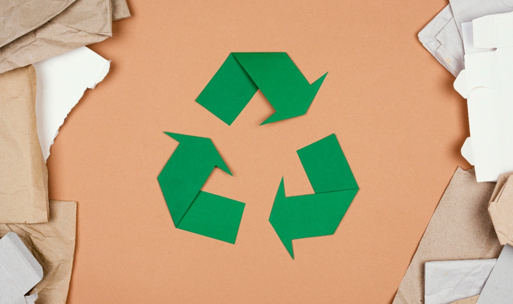

Soluções Sustentáveis

Reflorestamento, preservação de reservas naturais e uso consciente da madeira.
Ações Individuais
Reduzir consumo de papel, apoiar ONGs e divulgar informações sobre o tema.
Agricultura, pecuária, extração de madeira e mineração são as principais causas do desmatamento.
Expansão urbana e construção de estradas contribuem para a destruição das florestas.
Perda de biodiversidade, erosão do solo e alterações climáticas são consequências diretas.
Comunidades locais perdem recursos naturais e meios de subsistência.
Reflorestamento, preservação de reservas naturais e uso consciente da madeira.
Reduzir consumo de papel, apoiar ONGs e divulgar informações sobre o tema.